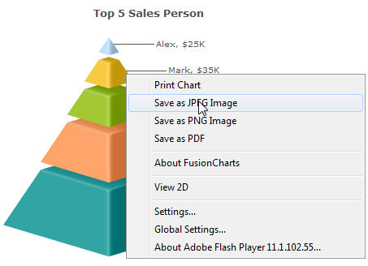
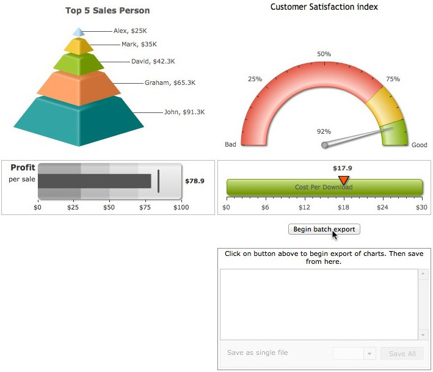

| Exporting charts to Image/PDF |
|
All charts in the FusionWidgets pack can be configured to be exported as image (JPEG or PNG) or PDF. The export can be handled either at client-side or at server-side. Exported image/PDF can be saved at client-side or stored on the server. The image (below) shows how chart export is initiated at client-side from the chart's context menu. The initiation can also be done using JavaScript APIs. By default, these menu items do not appear in the chart. You'll need to configure the export options and handlers to make the chart ready for exporting. In this section, we briefly explain all export options.  FusionWidgets, by itself, cannot directly export the charts as images. It needs assistance either from server-side scripts, or a client-side Export Component (runs in Flash Player 10 or above). FusionWidgets sends the bitmap snapshot of its chart to these objects, which in turn convert them into an image or PDF. These objects are called FusionCharts Export Handlers. The export handlers come in two flavors: Server-side Handlers & Client-side Handlers. The server-side export handlers help you export FusionWidgets as images/PDF with the help of scripts that are placed on your servers. We provide ready-to-use scripts for ASP.NET, PHP (uses GD and zlib library), Ruby on Rails (uses RMagick and zlib) and Java. These scripts accept compressed bitmap data from FusionCharts (over HTTP or HTTPS) and convert the same into images/PDFs. Post conversion, you've two options:
The client-side FusionCharts Export Component, as the name suggests, helps you bypass all server scripts and save the charts as images/PDFs at the client-side. You will typically use client-side export when your server doesn't support any of the technologies mentioned in server-side exporting or you don’t want to transfer data between your client and server (which in turn will make the export process faster). Client-side exporting is done using FusionCharts Export Component SWF file (needs Flash Player 10 or above) and FusionCharts Export JavaScript class (FusionChartsExportComponent.js). In both client and server-side exports, you can configure the output formats (PDF/JPEG/PNG) that you wish to make available from your context menu along with the cosmetics of the export dialog box itself. You can also make your own custom export panels (with custom buttons, look & feel) that are displayed along with the chart in a <DIV>, and then connect the same to the chart's export handlers. You can also use the client-side Export handler to export ALL the charts present in a web page upon a single click. This is called batch exporting. The exported files for each chart can then either be saved individually, or all the exported charts can be saved as a single file:  |
| Setting up chart for export |
|
To enable export feature of the chart you need to add export settings in chart data (XML/JSON). You need to set exportEnabled XML chart attribute or JSON chart property to 1. You also need to set whether to use client or server-side export using exportAtClient attribute and finally set the exportHandler. |
| How to setup chart data for export ? |
<chart exportEnabled='1' exportAtClient='0' exportHandler='FCExporter.php'
caption='Top 5 Sales Person' numberPrefix='$'>
<set label='Alex' value='25000' />
<set label='Mark' value='35000' />
<set label='David' value='42300' />
<set label='Graham' value='65300' />
<set label='John' value='91300' />
</chart>
{
"chart":{
"exportenabled":"1",
"exportatclient":"0",
"exporthandler":"FCExporter.php",
"caption":"Top 5 Sales Person",
"numberprefix":"$"
},
"data":[
{ "label":"Alex", "value":"25000" },
{ "label":"Mark", "value":"35000" },
{ "label":"David", "value":"42300" },
{ "label":"Graham", "value":"65300" },
{ "label":"John", "value":"91300" }
]
}
|
In this example, we're using the server-side Export Handler (FCExporter.php) to assist FusionWidgets in export of chart. |
| Features provided in export |
|
Export feature provides a wide range of export options to explore. You can:
For more details on each export feature, please go through Exporting as Image/PDF section. Please note that there are a few limitations of exporting pure JavaScript charts as listed below:
When rendered using JavaScript (HTML5), there is only one mode of export - at server-side. By default, JavaScript (HTML5) charts use Highcharts server to get exported image. However you can place the PHP and JAR files on your servers and then over-ride the URL. |